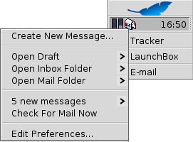

E-mail
E-mail
| Deskbar: | Preferences | |
| Location: | /boot/beos/preferences/E-mail | |
| Settings: | ~/config/settings/Mail/* |
Haiku provides a system that retrieves e-mail regularly via a mail_daemon and saves each mail as a single text file. It parses the mail and fills its attributes with all necessary header information, like from, to, subject and its unread status. Now it can be queried by you or any application. This system also makes switching e-mail clients easy as all the data and your configuration stays the same.
The configuration is done in the E-Mail preference panel.
Creating a new e-mail account
Let's go through the process of setting up an e-mail account.
You start by clicking the Add button to create a new, unnamed account. Then you declare the Account Type which is either Receive Mail Only, Send Mail Only, or the most usual type, Send and Receive Mail.
Now you enter an Account Name, your Real Name and the Return Address where replies will be sent to.
Setting up incoming e-mail
Click on Incoming under your account's name to set up how e-mails are received.

From the drop-down menu you choose the protocol used by your provider. IMAP and POP3 are supported.
Next is the Mail Server address for incoming mails. If your provider needs you to log into a specific port, you add that to the address, separated by a colon. For example, pop.your-provider.org:1400.
Then you enter your login information, Username and Password, and if necessary change the Login Type from the default Plain Text to APOP for authentication.
If you retrieve mails of this account from different computers, you may want to activate the option to Leave mail on server and only Remove mail from server when deleted locally.
The New Mail Notification offers different methods to announce the arrival of new mail. Try different settings to see what works best for you.
You can change the Location of your inbox (default: /boot/home/mail/in/), which is useful if you'd like to separate the mails from different accounts into their own folders. However, queries let you sort things out just as well.
Last on this page, you can opt to only Partially download messages that are larger than a certain size. This will only get the header and you can decide if you want to download the rest of the message plus possible attachments after seeing the subject and who sent it. Useful if you have a slow connection.
Setting up outgoing e-mail
Click on Outgoing under your account's name to set up how e-mails are sent.

As with incoming mail, you can also change the Location of your outbox (default: /boot/home/mail/out/).
Next is the SMTP Server address for outgoing mails. As with the incoming server before, you can use a specific port if needed, e.g. mail.your-provider.org:1200.
If you need to login, you change the Login Type to ESMTP and enter username and password above. The other type is used for providers that need you to check for mail with POP3 before SMTP for identification.
Setting up e-mail filters
If you want to filter your incoming email, you click on E-Mail Filters under your account's name to set up automatic sorting. You can add any number of filters that are applied one after the other. You can rearrange them by drag&dropping them to their new position.
Besides the R5 Daemon Filter that's used for backward compatibility, there are two other Incoming Mail Filters you can add.
Spam Filter

The spam filter uses statistical methods to classify a mail as unwanted spam. It assigns a value between 0 and 1 to it and you can decide what are the limits for a genuine mail and what will be considered spam.
You can have that spam rating added to the start of the subject.
Also, the spam filter can learn from all incoming e-mail. Of course, you'll have to teach it by sorting out the false positives, mails that were mistakenly marked as spam. You'll find more on that when we discuss the application Mail.
Together with the following Match Header filter, you're able to automatically sort out detected spam mails.
Match Header

This filter compares a header to a search pattern and performs some action when it matches.
With the first text field you specify which header to check against. These are available:
| Name | the name of the sender | |
| From | the e-mail address of the sender | |
| To | your e-mail address (different for each e-mail account) | |
| Reply To | the e-mail address replies are sent to | |
| When | the date and time the mail was received | |
| Subject | the subject line | |
| Cc | addresses of anyone receiving a carbon copy (Cc) | |
| Account | the name of the e-mail's account | |
| Status | The current status of the e-mail. Normally, this can be "Read", "Replied", "Sent", "Forwarded", "New", or anything you have designated yourself. However, unless you change it yourself in a filter, it will always be "New" when the mail_daemon fetched the mail. | |
| Priority | is set by the sender's e-mail program (e.g. "urgent") | |
| Thread | essentially the same as "Subject", but without things like Re: or Fwd: | |
| Classification Group | depending on what the spam filter classified it as, this will either be empty (if uncertain) or contain the word "Genuine" or "Spam" | |
| Spam/Genuine Estimate | this is a numerical estimate that the spam filter assigned to the e-mail. They are shown in scientific notation, where 1.065e-12 translates to 1.065 divided by 10 to the 12th power, which in this case translates to 0.000000000001065. |
The second text field holds your search pattern. It accepts regular expressions which gives it great flexibility, while unfortunately complicating things a bit. Read up on it a bit, it's well worth it and simple search patterns aren't that complicated at all.
With the drop-down menu below it, you assign an action when the pattern matches. You can move or delete a mail, set the status to "Read" or anything else or set the e-mail account you'll reply with.
Outgoing Mail Filters
At this moment, there's only one filter that deals with outgoing mail: Fortune.
It will attach a randomly chosen funny or wise "fortune cookie" to the end of every mail before it's sent out. You can do a dry run by issuing the command fortune in a Terminal.
Setting up the mail_daemon
Now that your incoming and outgoing mail servers (and maybe some filters, too), are configured, you have to tell the mail_server that does all the actual mail checking and fetching how to do its job.

Under Mail Checking you configure the interval at which the account's mail server is probed for new mail.
If you're on a dial-up connection, you may want to do that Only When Dial-Up is Connected and also Schedule Outgoing Mail When Dial-Up is Disconnected to avoid dialing automatically in regularly only to check for mail.
The mail_daemon has a status window which you can set to show up Never, While Sending, While Sending and Receiving or Always.
Make sure to Start Mail Services on Startup or there will be no mail_daemon running to do your bidding...
Edit Mailbox Menu... will open the folder /boot/home/config/Mail/Menu Links/. All folders or queries (!) or their links put into this folder will appear in the context menu of the mailbox icon of the Mail Services in the Deskbar tray.
From that menu, you can also Create New Message...s, Check For Mail Now or Edit Preferences....
The mailbox icon itself shows if there are unread messages (status "New") when there are envelopes inside.